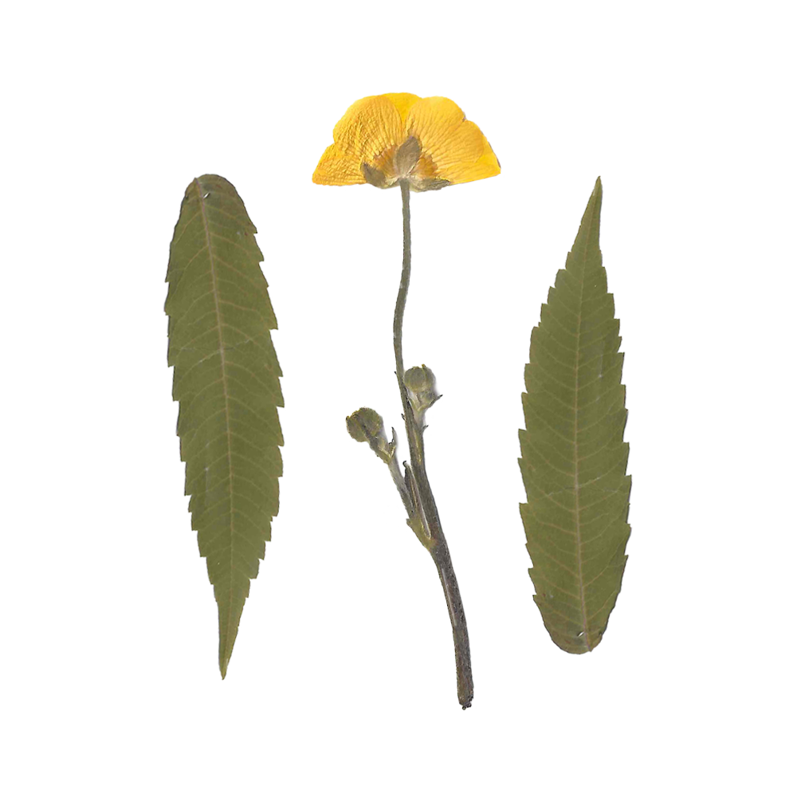

Speak your own love language
Why wait for someone to take care of you when you know exactly how to take care of yourself?
We spend so much time thinking about how we can best care for others that we often end up neglecting the most important relationship in our lives: the one with ourselves. The five love languages, a concept created by author and marriage counselor Gary Chapman, are general ways that we give and receive love—be that words of affirmation, gifts, quality time, physical touch or acts of service. They’re most often understood as ways we practice love with a partner, but let’s explore how we can show ourselves some love using our knowledge about our own love languages.
If you haven’t already, you can take the test to find out your love language here.
Words of Affirmation
If you like hearing you did a “good job” or “I love you” from a loved one, then this is your love language.
For me, cards are my kryptonite—you write me a card and I’m in tears. Though this is usually reliant on what others can do for you, you can also create a bubble of affirmations for yourself.
On a few cue cards, write down some traits you really appreciate about yourself or reminders to combat your insecurities. Read these aloud or in your head, first thing when you wake up. As you walk around your home, write little notes to yourself on sticky notes, or create notifications on your phone that remind you how amazing you are throughout the day. End your day by writing in a journal; take note of things that made you smile, things that you’re grateful for and things that you’re proud of yourself for. Then, on the days when you feel a bit down, re-read your entries.
Receiving Gifts
If a little token of appreciation or a surprise sweet treat is one of the ways you feel most loved, then receiving gifts is your love language.
A way you can apply this to yourself is to splurge on some flowers from you, to you, or treat yourself with that thing you’ve been eyeing. Some stores like Sugoi Mart and Grandma’s Basement Co. even offer mystery boxes if you want to retain the element of surprise. But it can even just be smaller, more consistent gifts to yourself that make you smile. I’ve made a little routine for myself: on Sundays, I wake up and go for a run, then stop for a coffee on my way home. I start my day doing things completely for myself—exercise for my body and coffee for my soul.
Quality Time
To be one’s own best friend may be the best present of all. Spend some quality time with yourself to learn more about you.
Try browsing TikTok to learn a new obscure hobby like rug-making or how to knit a frog by hand. If you miss going on dates or spending the day with friends, plan an entire day for yourself to do things that make you truly happy. Make yourself brunch, go window shopping (once we’re not in a province-wide lockdown), have a picnic and bring a book, and order dinner from your favourite restaurant. All the things that you would appreciate to do with someone else, do them with yourself.

Physical Touch
Sometimes a nice, warm hug or holding hands is what we need to feel safe and loved, so if you’ve been living alone for the last couple of months, you might be a little touch-starved. There are, however, ways to find our own means of physical comfort.
Try taking a long, warm shower and create a pamper routine to hydrate and nourish your skin. Moisturize and give yourself a little massage, and then wrap yourself up in some cozy clothes that feel nice against your skin. You can also do some stretches or invest in a weighted blanket; it feels like a hug and reduces anxiety.
Acts of Service
When someone does an act of service for you, like doing the dishes or running an errand, you feel their love through their care for your time. This love language doesn’t usually cost any money and goes to show how self-care can be so much more than buying bath bombs and candles.
To do this for yourself, complete smaller tasks that you know you’ll have to do in the future, when you might have less energy. For example, make your bed in the morning so that you can just fall into bed at night. Or you could meal prep on a day when you don’t have a lot to do so you don’t have to worry about meals when you’re busier the next day. Make sure you’re filling yourself with nutritious food to keep your body and mind energized and healthy. You can also prepare a daily schedule before going to bed to allot the time you need for each task. This way, when you wake up in the morning, you have a plan to tackle challenging tasks whilst staying calm and organized.
Use these various love languages to show and remind yourself that you care and are willing to go the extra mile to put a smile on your face. You are amazing and deserve it all. Happy self-caring!